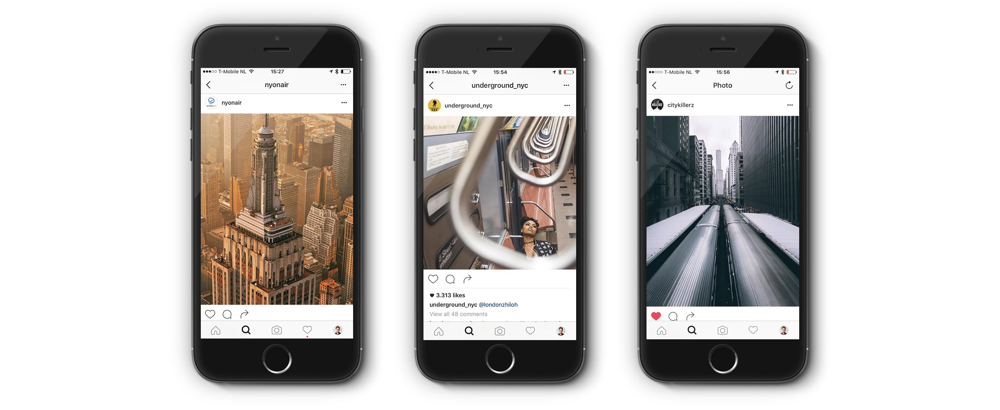

Awwwards has selected me to be on their jury board all year long, casting my vote on websites from all over the world every day!
Martha Everett from Awwwards interviewed Jasper van Orden
(Awwwards) What qualities should a web designer have? Do you think it’s more limited by technical requirements than other disciplines?
(Jasper) In my opinion, the mark of a good web designer is a deep and sincere interest in human behavior. Tailoring your creations to the needs and wishes of a specific audience calls for a thorough understanding of the people you are working for. I believe that the proper insights underpinning the best results come about through conducting interviews and smart research targeting the final users as well as their frame of reference.
Personally, I think that web designing is actually less limited than designing for other media. New technologies pave the way for new kinds of interaction. Web designers interested in technical innovation are in a unique position to combine the latest techniques with visual excellence to create distinct and remarkable online experiences.
Understanding The End User's Frame Of Reference Is Key In Designing The Right Thing

What will the designer’s role be in the world of standards-based apps?
I think there will always be a market for apps based on standard frameworks. At the same time, however, I think that as apps become increasingly similar in appearance and functionality, people’s appreciation of distinctive and unorthodox apps will grow. People just love to express themselves through their individual activities and ways of living. The designer’s task, then, is to come up with unconventional concepts to create products that people adopt and want to have regardless of prices.
Where do you look for inspiration in your day-to-day work?
I get my daily dose of inspiration from modern and industrial architecture in the city where I live, as well as from the brilliant images photographers post in my Instagram feed.

Which blogs, web applications or mobile apps do you check or use every day?
Skyscrapercity, Instagram, The Big Picture, Dribbble, Twitter and of course Awwwards.
How can UX, interaction design and content design be integrated with visual design?
By working in multi-disciplinary teams consisting of open-minded and creative people.
What do you do when you’re not working?
Taking photos and sharing them on Instagram while I’m strolling around the city. Reading about architecture and urban planning. Watching all kinds of documentaries. Visiting friends, bars, clubs, galleries and museums. Dreaming about moving to Brooklyn, NYC. And going on city-trips with my girlfriend.
My Work Is Definitely Influenced By The Modern Architecture In Rotterdam

Which city do you live in? Is it a good place for designers?
My home town of Rotterdam, the Netherlands, is crammed with modern and post-war architecture. It has a great industrial past because of its massive harbor. Over the last few decades, the actual port facilities were gradually shifted westwards, towards the North Sea. The old harbor districts and warehouses have been re-developed into new residential areas serving as a hotbed for all sorts of cultural activities. It’s inspiring to walk the boardwalks and see the mix of old and new architecture reflected in the large expanses of water. Rotterdam is wildly multicultural, its inhabitants are young, and the city rides a current of perpetual change. Unlike other Dutch cities, you have to learn to understand this city to love it. It feels as if many creatives are just starting to understand the beauty of this un-gentrified city.
Do you go to any web-related conferences or events? Which ones?
I attended a few small conferences in the Netherlands. SXSW and Le web are on my list.
To get the most out of this interview, we’d like to ask you to come up with an interesting question you’d ask yourself if you were us, taking into account your special expertise. And please answer it!
Do you think the physical and digital worlds are well integrated?
Not well enough, as of yet; I think there is much to focus on when it comes to using multiple senses. I see many beautiful examples in the physical world that could help the user experience online and the other way around. I’m looking forward to see the digital world become more human and intuitive in the future.
Thank you for taking the time to do the interview.
Thanks for making me feel important.


- Jonathan Reijneveld
- Journal /
Sketch Plugins That Will Make Your Life Easier
Sketch has become a important part of our workflow, for our designers as well as our coders.
Read more